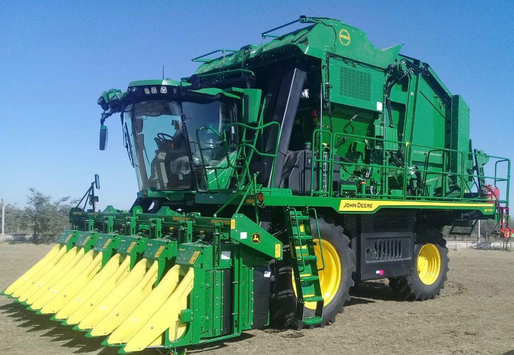
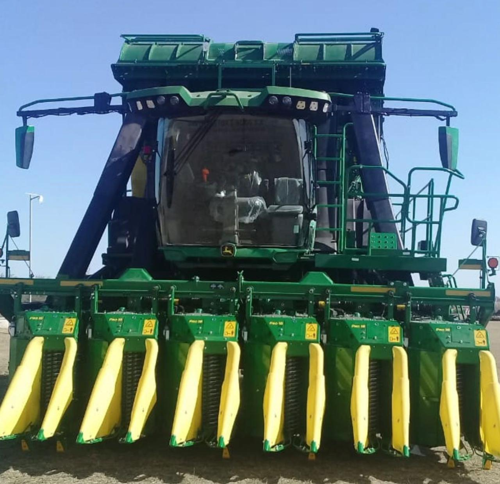
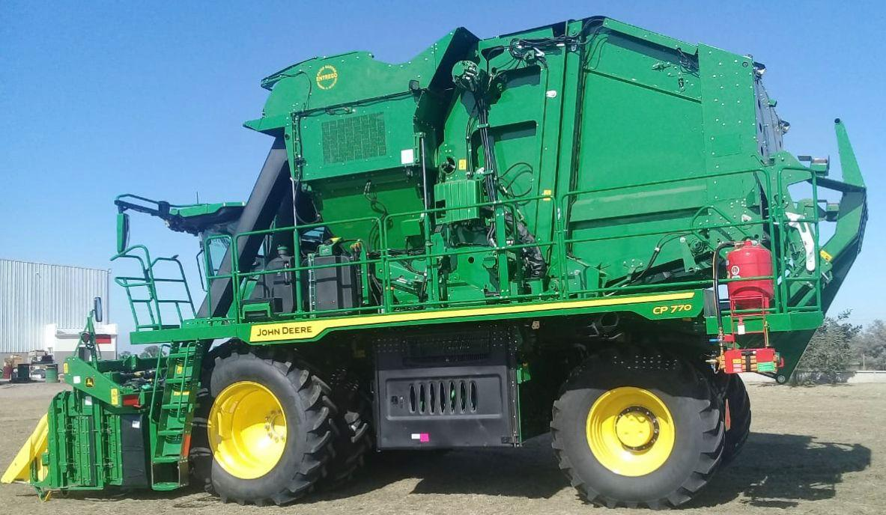
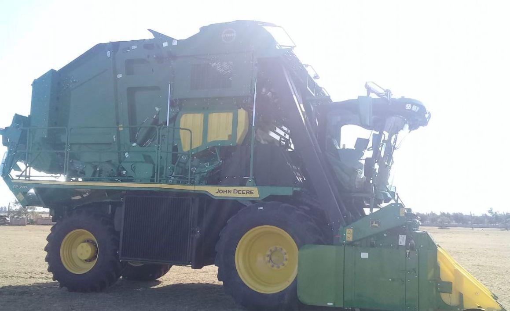
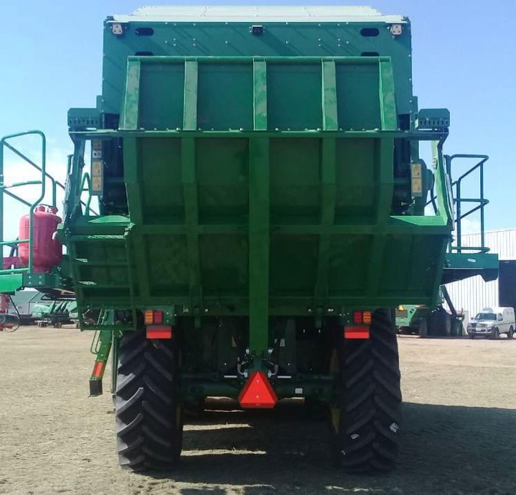

Lista para la campañaLa última generación de cosechadoras de algodón John Deere: arma y descarga el rollo sin detenerse, con más capacidad y menos consumo que el modelo anterior. Unidad con 3.500 horas, papeles al día, en Santiago del Estero.




| Marca y modelo | John Deere CP770 |
| Tipo | Cosechadora de algodón (picker) con rollo |
| Año | 2022 |
| Horas | 3.500 |
| Cabezal | 6 surcos, unidades PRO16 |
| Documentación | Papeles al día |
| Ubicación | Santiago del Estero |
| Precio | USD 600.000 |
Datos de fábrica del modelo CP770 según John Deere. El equipamiento opcional de esta unidad se confirma con el vendedor.
Escuchamos propuestas. Escribinos y te pasamos las condiciones.
Base en efectivo más camionetas, propiedades o cheques confiables como parte de pago.
Hasta 3 años con pagos semestrales.
Coordinamos la visita, te mandamos video en marcha y respondemos todas tus consultas.
Coordinar visita · 381 212-4255